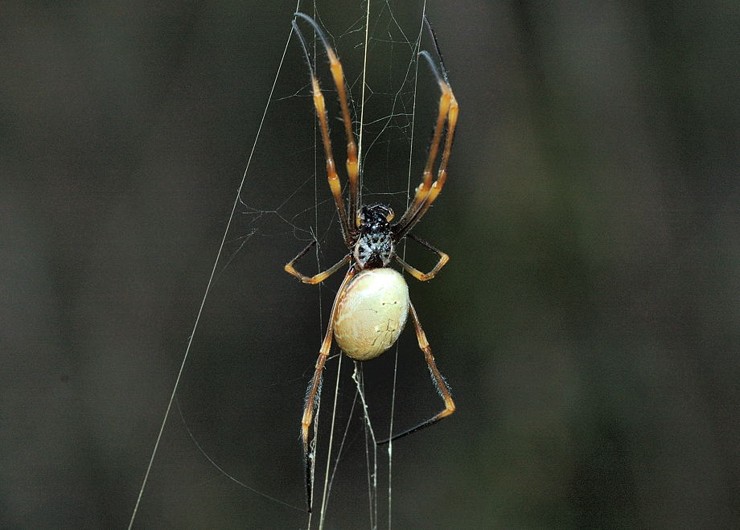
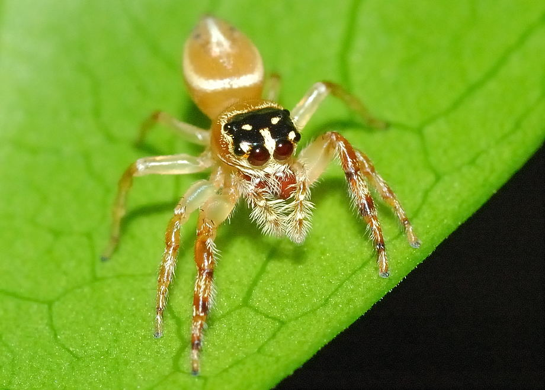
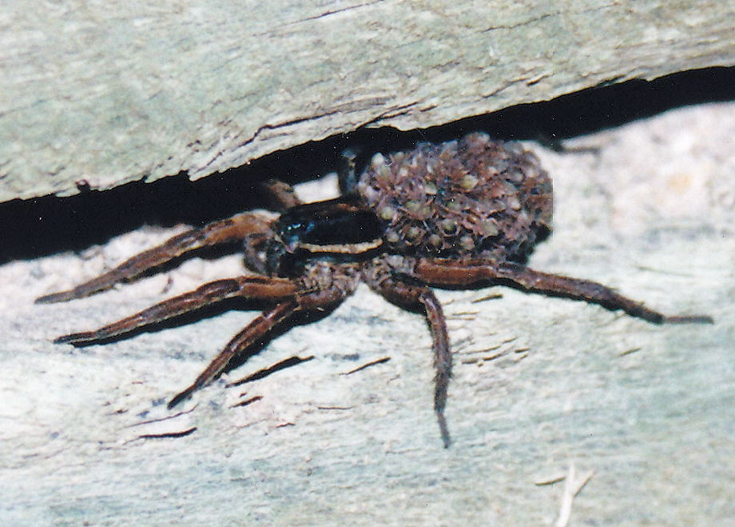

This page will tell you all about some of the spiders you will find around Brisbane.
Some are friendly and some are dangerous! Please don't touch a spider unless you are sure it is safe!

The Golden Orb Weaver is one of the most common spiders found in Brisbane backyards.
The Garden Jumping Spider loves hunting on the leaves of shrubs or small trees.
The Wolf Spider is a fast moving spider that lives in burrows in the ground.
